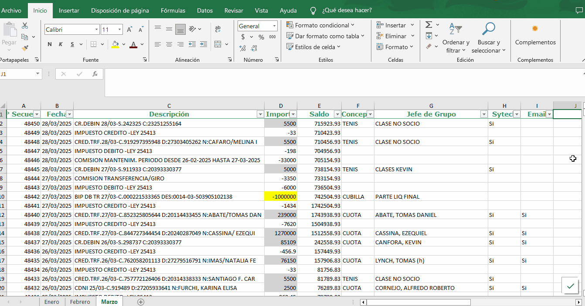

🌀 Automating Discóbolo – Full Walkthrough
It automates the download of bank transactions, updates them into a master Excel file, and then loads them into an online payment system called Sytech.”
💻 Step 1: Downloading the Excel File from Banco Provincia

The script uses Selenium to log into the bank’s website and download the latest transactions in Excel format.
📊 Step 2: Updating the Master Excel
It uses "N° Secuencia" field as a reference to insert the new values. Then, it takes the DNI or CUIL from the transfer description to identify the user in an Excel database. Finally, it determines the correct concept (tenis, payment, events, etc.) and the corresponding group leader, while avoiding duplicates in the newly inserted rows and preserving the formatting.
🌐 Step 3: Loading Payments into Sytech

The script searches for each client in the master Excel with all the updated transfers and automatically registers the payment in the online payment site with the right method.
📨 Step 4: Sending emails with receipt
It sends an email to all users with the payment's receipt attached to it, a PDF previously downloaded and with the correct identifier.